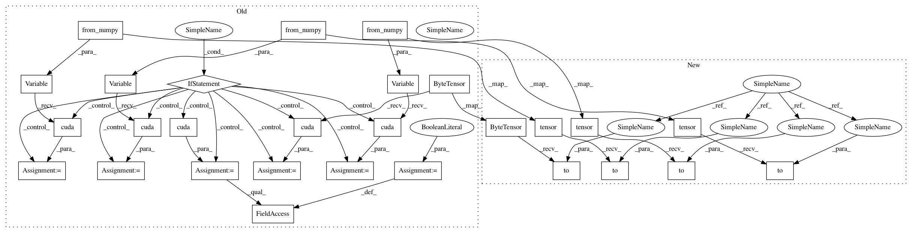

b5e848af46b4a6fc21e718803dbf3d7c72afd72a,ch08/lib/common.py,,calc_loss,#Any#Any#Any#Any#Any#,92
Before Change
def calc_loss(batch, net, tgt_net, gamma, cuda=False):
states, actions, rewards, dones, next_states = unpack_batch(batch)
states_v = Variable(torch.from_numpy(states))
next_states_v = Variable(torch.from_numpy(next_states), volatile=True)
actions_v = Variable(torch.from_numpy(actions))
rewards_v = Variable(torch.from_numpy(rewards))
done_mask = torch.ByteTensor(dones)
if cuda:
states_v = states_v.cuda()
next_states_v = next_states_v.cuda()
actions_v = actions_v.cuda()
rewards_v = rewards_v.cuda()
done_mask = done_mask.cuda()
state_action_values = net(states_v).gather(1, actions_v.unsqueeze(-1)).squeeze(-1)
next_state_actions = net(next_states_v).max(1)[1]
next_state_values = tgt_net(next_states_v).gather(1, next_state_actions.unsqueeze(-1)).squeeze(-1)
next_state_values[done_mask] = 0.0
next_state_values.volatile = False
expected_state_action_values = next_state_values * gamma + rewards_v
return nn.MSELoss()(state_action_values, expected_state_action_values)
// losses_v = (state_action_values - expected_state_action_values) ** 2
After Change
def calc_loss(batch, net, tgt_net, gamma, device="cpu"):
states, actions, rewards, dones, next_states = unpack_batch(batch)
states_v = torch.tensor(states).to(device)
next_states_v = torch.tensor(next_states).to(device)
actions_v = torch.tensor(actions).to(device)
rewards_v = torch.tensor(rewards).to(device)
done_mask = torch.ByteTensor(dones).to(device)
state_action_values = net(states_v).gather(1, actions_v.unsqueeze(-1)).squeeze(-1)
next_state_actions = net(next_states_v).max(1)[1]
next_state_values = tgt_net(next_states_v).gather(1, next_state_actions.unsqueeze(-1)).squeeze(-1)
In pattern: SUPERPATTERN
Frequency: 3
Non-data size: 28
Instances
Project Name: PacktPublishing/Deep-Reinforcement-Learning-Hands-On
Commit Name: b5e848af46b4a6fc21e718803dbf3d7c72afd72a
Time: 2018-04-27
Author: max.lapan@gmail.com
File Name: ch08/lib/common.py
Class Name:
Method Name: calc_loss
Project Name: PacktPublishing/Deep-Reinforcement-Learning-Hands-On
Commit Name: db09dc1fb503ab8f7de69fa23e8d38742bda8e90
Time: 2018-04-27
Author: max.lapan@gmail.com
File Name: ch07/03_dqn_double.py
Class Name:
Method Name: calc_loss
Project Name: PacktPublishing/Deep-Reinforcement-Learning-Hands-On
Commit Name: db09dc1fb503ab8f7de69fa23e8d38742bda8e90
Time: 2018-04-27
Author: max.lapan@gmail.com
File Name: ch07/lib/common.py
Class Name:
Method Name: calc_loss_dqn
Project Name: PacktPublishing/Deep-Reinforcement-Learning-Hands-On
Commit Name: b5e848af46b4a6fc21e718803dbf3d7c72afd72a
Time: 2018-04-27
Author: max.lapan@gmail.com
File Name: ch08/lib/common.py
Class Name:
Method Name: calc_loss